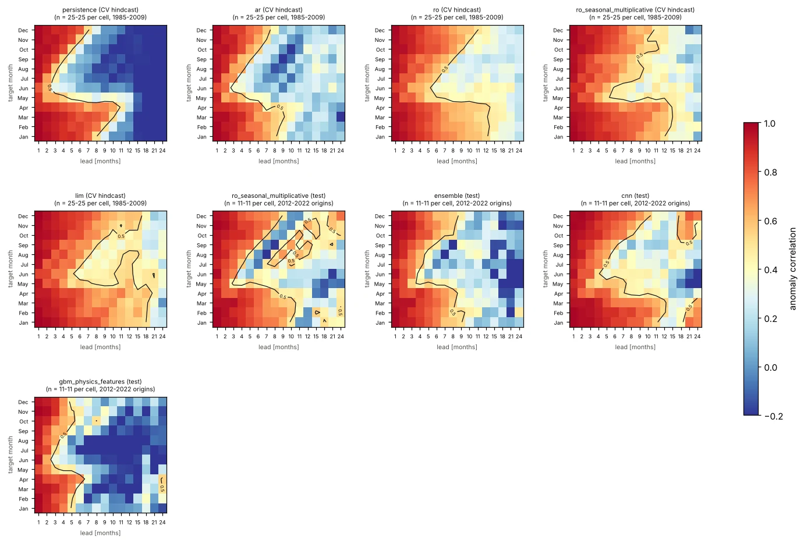
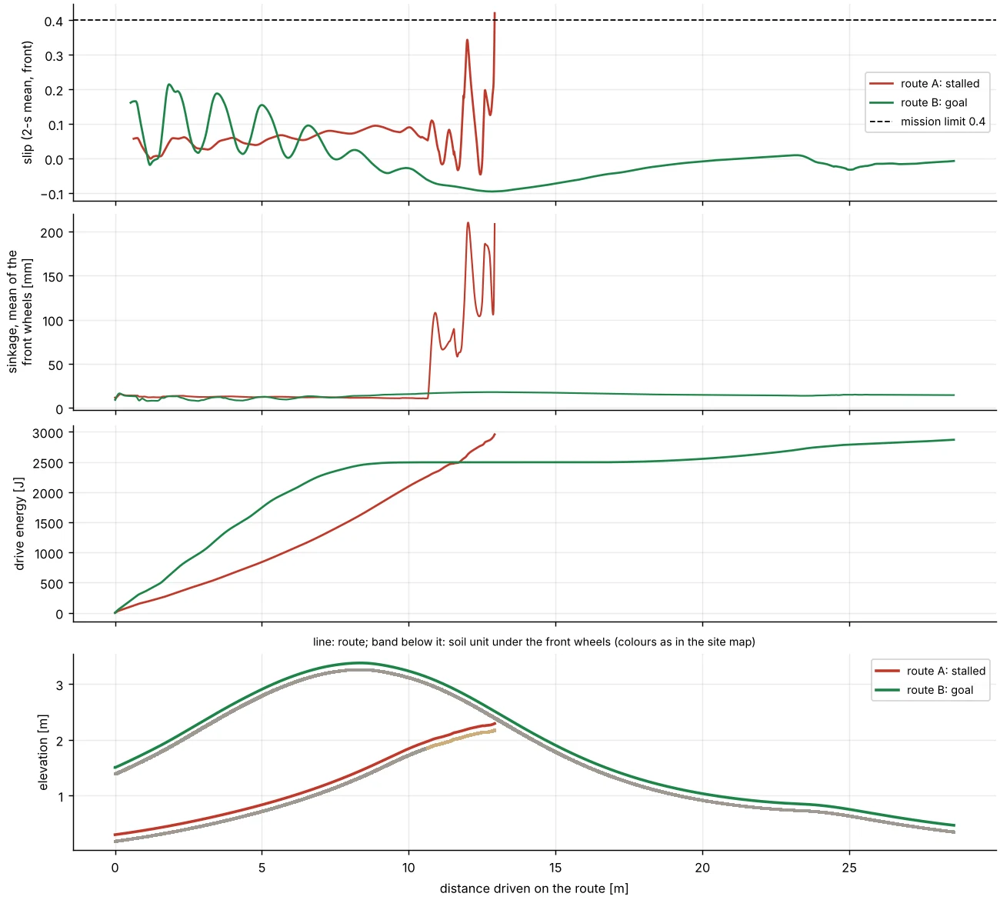
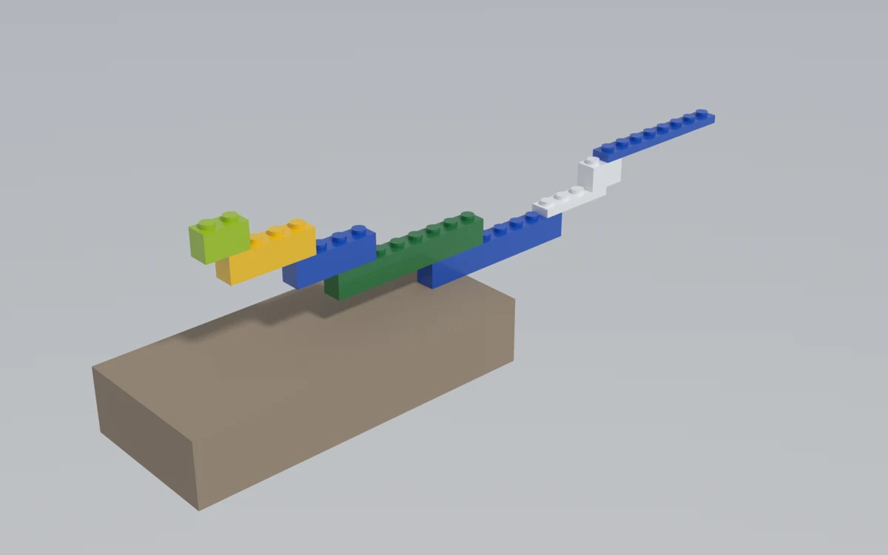
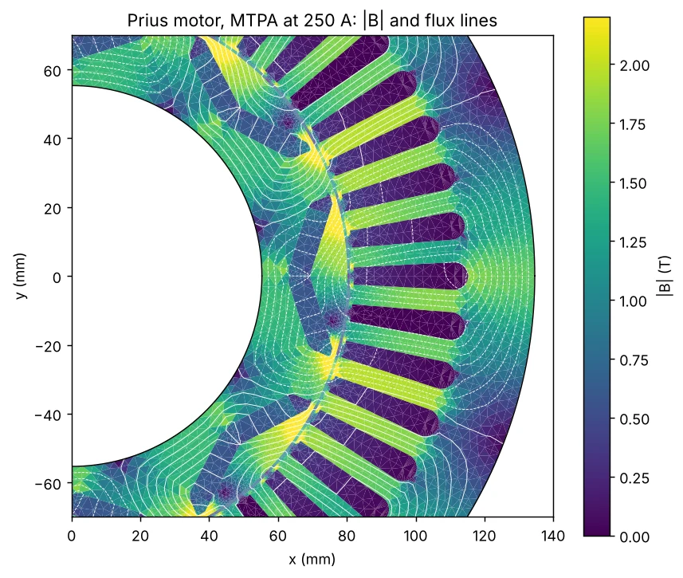
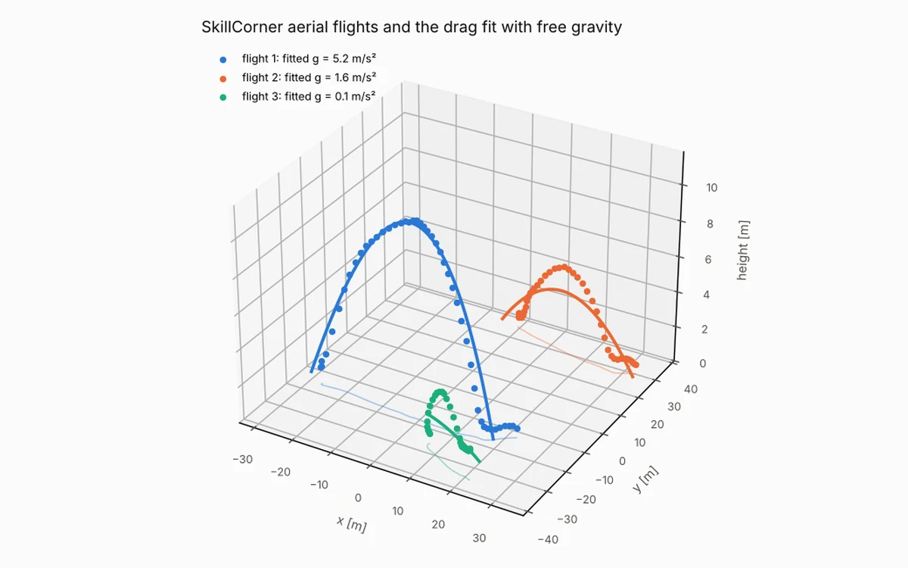
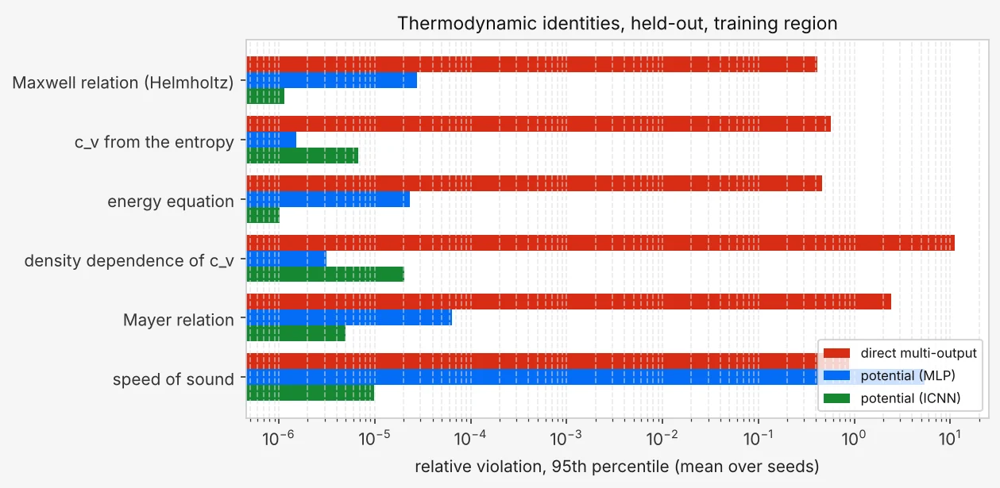
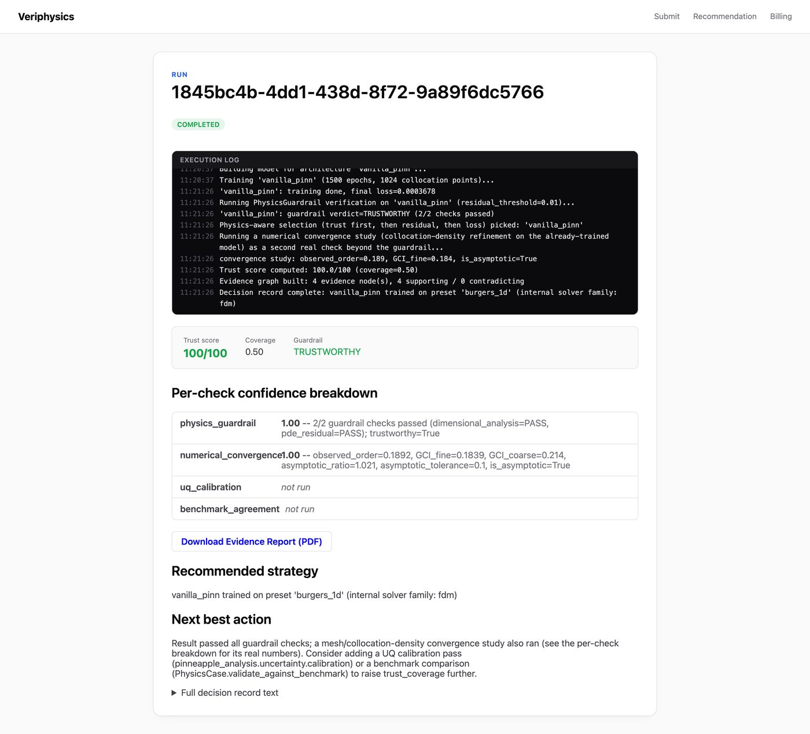

Artigos
Os casos, contados por inteiro.
Cada artigo é um experimento: o que foi medido, contra o que foi comparado e onde ainda não chegamos. É a mesma regra da casa, aplicada ao texto.

O FNO acerta o campo e é reprovado na física
Uma placa fria com 50 layouts, um FNO de 1,18 milhão de parâmetros treinado em 133 s e 1,7% de erro contra a solução de volumes finitos. E o cartão de confiança dizendo não.
13 de novembro de 2026
O mesmo campo, do solver ao motor de jogo
Três caminhos entre o PINNeAPPle e o Unity: o gêmeo exportado como projeto, uma cena do Unity virando camada OpenUSD com física, e uma ponte HTTP que responde em 23 ms enquanto o jogo roda.
13 de novembro de 2026
Cinco ferramentas, cinco referências independentes
Primeira passagem, espectro de Koopman, sensores escolhidos por informação de Fisher, análise dimensional e indicadores de alerta. Cada um conferido contra uma resposta que não veio do modelo.
13 de novembro de 2026
28 modelos para o El Niño, um protocolo, e o que perdeu
Cinco famílias de modelo, do AR à PINN, com os mesmos dados, a mesma janela e a mesma régua de significância. A 24 meses de antecedência ganha um oscilador de poucos parâmetros, e duas redes grandes não superam a persistência.
13 de novembro de 2026
O rover que aprendeu o solo pelas próprias rodas
Uma missão em linguagem comum, uma rota no mapa orbital e um travamento na areia. O rover mediu o escorregamento, refez o modelo do solo, replanejou e chegou, com metade do escorregamento e um décimo do afundamento.
13 de novembro de 2026
Três construções de bloco, com a física como juiz
Um balanço de 135,9 mm, uma ponte de 3 peças e uma torre de 153,6 mm, todos encontrados por busca automática. E a checagem que decide se dá para confiar: estática contra formas fechadas e contra um simulador de corpo rígido.
13 de novembro de 2026
Dois solvers concordam em 0,19%, e os dois discordam do artigo
O motor do Prius resolvido pela FEM da casa e pelo GetDP, um código independente, em 12 posições de rotor. Os dois chegam ao mesmo torque. Contra o benchmark publicado, os dois se afastam a mesma distância.
13 de novembro de 2026
20 simulações, 3,3 horas, 15,7% menos arrasto
Um carro de corrida paramétrico, três objetivos declarados e um orçamento de 20 rodadas de CFD. A plataforma escolheu onde gastar cada uma, e o ganho foi conferido de novo na malha fina.
13 de novembro de 2026
Onde a física ajuda no futebol, e onde ela não ajudou
Quatro perguntas com os mesmos dados públicos e a mesma regra: um modelo só com o dado contra outro que também conhece a física. Em três frentes a física ganha, na quarta não ganha nada, e o resultado negativo está publicado do mesmo jeito.
12 de novembro de 2026
O substituto mais preciso era o que quebrava a termodinâmica
Duas famílias de substituto para CO₂ perto do ponto crítico, com os mesmos dados e o mesmo orçamento de treino. A rede direta acerta mais e viola a identidade de c_v em 1.100%. A de potencial erra mais e, com convexidade na entrada, mantém as seis identidades abaixo de 0,002%.
11 de novembro de 2026
O que a perda de treino escondeu
Um modelo já treinado, com loss saudável no relatório, e o resíduo da física mais de cem vezes acima do limite. Foi assim que o guardrail entrou no produto.
2 de outubro de 2026
1.920 asas, três objetivos e 13% menos CO₂
Otimização multiobjetivo em CFD 3D: cada asa foi voada no OpenFOAM, e o resultado não é “a melhor asa”, é o mapa de trocas entre três objetivos que brigam entre si.
20 de setembro de 2026
O gêmeo que avisou 2,6 horas antes
Um permutador em operação, uma incrustação que cresce sem aviso e um modelo que precisa merecer confiança antes de entrar em planta. O erro medido foi 0,216 °C.
5 de setembro de 2026
Erosão numa curva de 90°: a conta bateu com o ensaio
Ar com areia a 15 m/s, uma curva de 90° e um ensaio publicado para comparar. O resultado ficou entre 1,05 e 1,49 vez o medido, dentro do fator 2 que a indústria aceita.
28 de agosto de 2026
Um dissipador que responde 200 mil vezes mais rápido
Sete geometrias de dissipador, um solver 3D e um modelo que devolve a temperatura de junção em milissegundos. Erro médio de 4,46%; pior caso, 7,35%.
30 de julho de 2026
A falha que aparece antes de rodar
Boa parte do tempo perdido em simulação não é cálculo: é descobrir, depois de horas de fila, que a malha era ruim ou que o caso não tinha apoio. Duas checagens resolvem isso antes do play.
18 de junho de 2026Traga o seu caso
Tem uma simulação lenta, cara ou difícil de verificar?
Mande o caso. Respondemos com um escopo fechado e uma métrica de sucesso mensurável, ou dizemos que o método clássico resolve melhor.